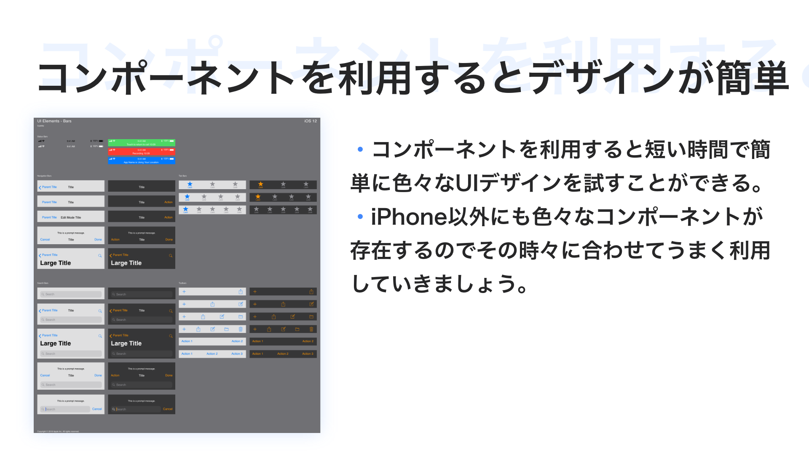
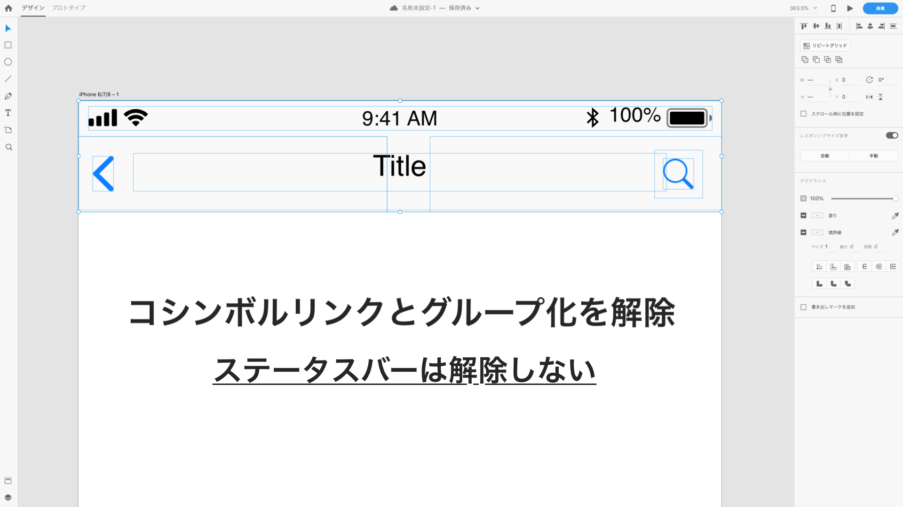
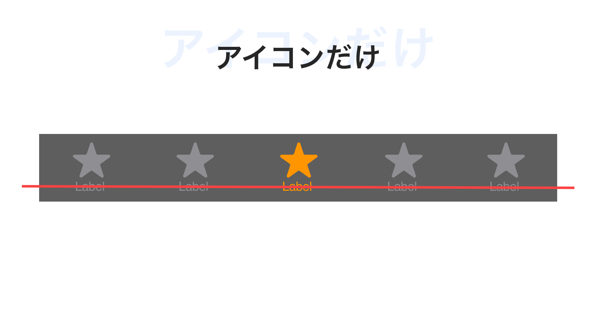
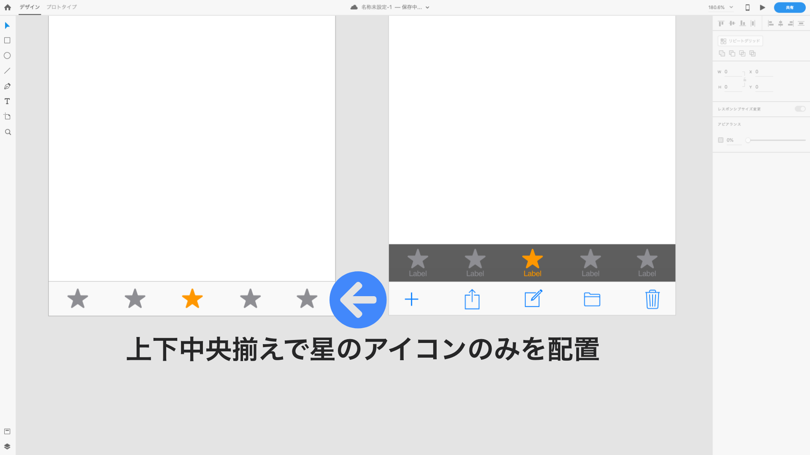

コンポーネントを当てはめる
コンポーネントをうまく活用しよう
iOSのコンポーネントをうまく活用してUIデザインをスピーディーにしましょう。

↑コンポーネントを利用するとUIデザインが簡単です。
まず「 UIElements+DesignTemplates+Guides-iPhone8 」ファイルから引用してきた「 ステータスバー 」「 ナビゲーションバー 」を作成したアートボードに配置しましょう。 シンボルリンクとグループ化は解除 しておいてください。

↑ステータスバーのグループ解除しないのは干渉する必要がないからです。
次にタブバーなんですが 2つ 用意してもらいました。Instagramのタブバーには文字がなく、アイコンだけです。そのため heightは45px でアイコンは星の配置が適しています。そのため少し アレンジ する必要があります。

↑アイコンだけが必要です。
まず2つとも シンボルリンクとグループ化を解除 します。次に 背景部分と境界線をタブバーに配置 します。中のアイコンは消してもらって構いません。

↑背景部分と境界線をタブバーに配置します。
次に星のアイコンのみを5つ上下中央揃えで配置させましょう。これでコンポーネントの配置は完成です。

↑これでコンポーネントの配置は完成です。